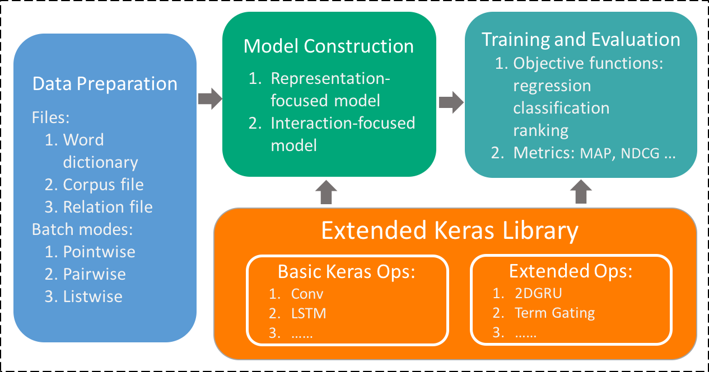

Liang Pang is an associate professor at Institute of Computing Technology, Chinese Academy of Sciences. He received Ph.D. degree in Computer Science from University of Chinese Academy of Sciences in 2018 under supervising by Prof. Guojie Li. Before that, He get a B.S. degree in Software Engineering from Huazhong University of Science and Technology in 2012.
His current research is focused on deep learning in text matching tasks, including ranking, query answering, paraphrase identification.


MatchingZoo is a toolkit for text matching. It was developed with a focus on facilitate the designing, comparing and sharing of deep text matching models. The architecture of the MatchZoo toolit is depicited in Figure. There are three major modules in the toolkit, namely data preparation, model construction, training and evaluation, respectively. These three modules are actually organized as a pipeline of data flow.
Reference:
Yixing Fan, Liang Pang, Jianpeng Hou, Jiafeng Guo, Yanyan Lan and Xueqi Cheng. MatchZoo: A Toolkit for Deep Text Matching. Neu-IR: The SIGIR 2017 Workshop on Neural Information Retrieval, Tokyo, 2017.
A platform for not only reporting the performances of state-of-the-art algorithms in different domains, but also providing the corresponding datasets, codes, and scripts that can make the experimental results reproducible.